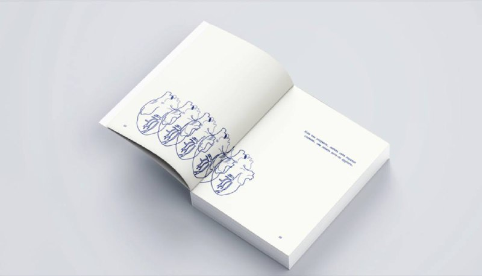

Сквозь Весну
«Сквозь Весну» - это место силы для людей, сбившихся со своего пути, потерявших веру в себя и во все окружающее. Каждая страница издания пропитана светом в надежде на улучше- ние вашего самочувствия. Открывайте эту книгу, когда вам будет казаться, что все потеряно.
